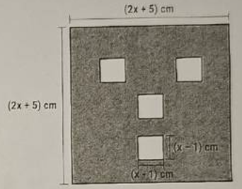
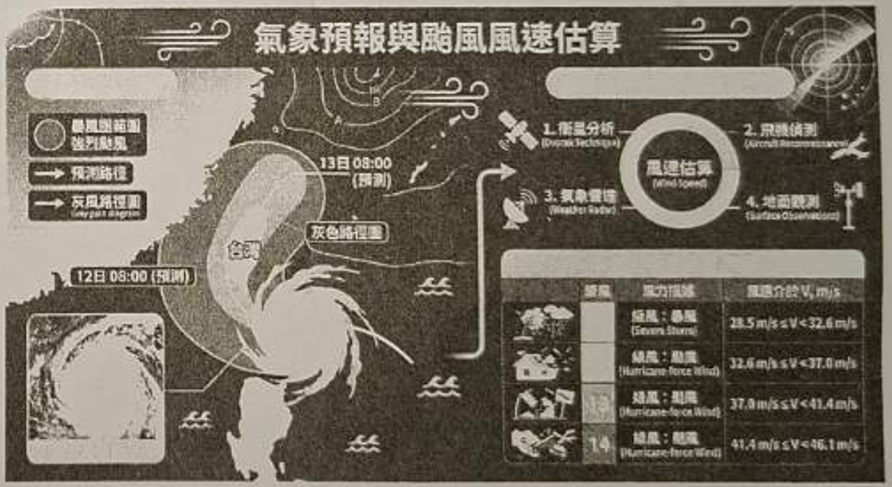

🏠 段考導覽首頁
📘 七年級試卷
📗 八年級試卷
📙 九年級試卷
新北市立新泰國民中學 115 學年度 第一學期 第一次段考
八年級 數學科試卷與詳細解析
班級：
座號：
姓名：
配分如下：
答對題數
1
2
3
4
5
6
7
8
9
10
分數
5
10
15
20
25
30
35
40
45
50
答對題數
11
12
13
14
15
16
17
18
19
20
分數
55
60
64
68
72
76
80
84
87
90
※ 選擇題與填充題共 20 題（滿分 90 分），非選計算題 2 題共 10 分，總分 100 分。
💡 全部展開解析
📁 全部收合解析
🖨️ 列印試卷 (含解析)
📄 列印空白試卷
一、選擇題
1.
( ) 下列哪一個算式的展開或計算結果是正確的？
💡 查看解析
(A)
$(a + b)^2 = a^2 + b^2$
(B)
$(a - b)^2 = a^2 - 2ab - b^2$
(C)
$(a + b)(a - b) = a^2 - b^2$
(D)
$98 \times 102 = 100^2 + 2^2$
✓ 正解：(C) (a + b)(a - b) = a^2 - b^2
📌 核心觀念
乘法公式（和的平方、差的平方、平方差公式）。
📝 逐步詳細解析
檢驗各選項之乘法公式：
(A)
$(a + b)^2 = a^2 + 2ab + b^2 \ne a^2 + b^2$（漏掉了中間項 $2ab$）。
(B)
$(a - b)^2 = a^2 - 2ab + b^2 \ne a^2 - 2ab - b^2$（最後一項應為 $+b^2$）。
(C)
$(a + b)(a - b) = a^2 - b^2$（平方差公式，
正確
）。
(D)
$98 \times 102 = (100 - 2)(100 + 2) = 100^2 - 2^2 \ne 100^2 + 2^2$。
🔍 選項分析
選項 (C) 符合平方差乘法公式，故選 (C)。
2.
( ) 關於多項式 $3x^2 - 4x + 5$ 的敘述，下列何者錯誤？
💡 查看解析
(A)
此多項式為二次多項式
(B)
$x^2$ 項的係數為 3
(C)
常數項為 5
(D)
$x$ 項的係數為 4
✓ 正解：(D) x 項的係數為 4
📌 核心觀念
多項式的次數、項與係數的判讀（注意正負符號）。
📝 逐步詳細解析
分析多項式 $3x^2 - 4x + 5$：
1. 最高次項為 $3x^2$，最高次數為 2，故為二次多項式，(A) 正確。
2. $x^2$ 項為 $3x^2$，其係數為 3，(B) 正確。
3. 不含未知數 $x$ 的項為常數項，其值為 5，(C) 正確。
4. 一次項為 $-4x$，係數包含負號，應為
-4
，而不是 4，故 (D)
錯誤
。
🔍 選項分析
$x$ 項的係數為 -4，(D) 敘述錯誤，故選 (D)。
3.
( ) 計算 $(2x^2 + 5x - 3) + (x^2 - 3x + 2)$ 的結果為何？
💡 查看解析
(A)
$3x^2 + 2x - 1$
(B)
$3x^2 + 8x - 1$
(C)
$x^2 + 2x - 5$
(D)
$3x^2 + 2x + 1$
✓ 正解：(A) 3x^2 + 2x - 1
📌 核心觀念
多項式的加法運算：去括號並將同類項合併。
📝 逐步詳細解析
去括號直接相加：
$(2x^2 + 5x - 3) + (x^2 - 3x + 2) = 2x^2 + 5x - 3 + x^2 - 3x + 2$。
將同類項分組整理：
1. 二次項：$2x^2 + x^2 = 3x^2$
2. 一次項：$5x - 3x = 2x$
3. 常數項：$-3 + 2 = -1$
合併結果為：$3x^2 + 2x - 1$。
🔍 選項分析
各項係數分別為 3、2、-1，對應選項 (A)。
4.
( ) $(-3x) \times (2x - 5)$ 的結果為何？
💡 查看解析
(A)
$-6x^2 - 15x$
(B)
$6x^2 + 15x$
(C)
$-6x^2 - 5$
(D)
$-6x^2 + 15x$
✓ 正解：(D) -6x^2 + 15x
📌 核心觀念
單項式乘以多項式的乘法分配律與符號法則（負負得正）。
📝 逐步詳細解析
利用分配律展開：
$(-3x) \times (2x - 5) = (-3x) \times (2x) + (-3x) \times (-5)$。
計算各項：
1. 第一項：$(-3) \times 2 \times x \times x = -6x^2$
2. 第二項：$(-3) \times (-5) \times x = +15x$（負負得正）
合併結果為：$-6x^2 + 15x$。
🔍 選項分析
常數相乘 $(-3) \times (-5) = +15$，第二項為 $+15x$，故選 (D)。
5.
( ) 下列何者為 $\sqrt{196}$ 的值？
💡 查看解析
(A)
13
(B)
14
(C)
16
(D)
18
✓ 正解：(B) 14
📌 核心觀念
正整數的完全平方數與算術平方根（根號）之定義。
📝 逐步詳細解析
根號記號 $\sqrt{a}$ 代表 $a$ 的正平方根（或算術平方根）。
檢驗常用完全平方數：
$13^2 = 169$
$14^2 = 196$
$16^2 = 256$
$18^2 = 324$。
因為 $14^2 = 196$，所以 $\sqrt{196} = 14$。
🔍 選項分析
14 的平方為 196，故選 (B)。
6.
( ) 關於平方根的敘述，下列何者正確？
💡 查看解析
(A)
-25 的平方根是 -5
(B)
0.3 是 0.9 的平方根
(C)
0 的平方根是 0
(D)
若 $a^2 = 7$，則 $a$ 一定是 $\sqrt{7}$
✓ 正解：(C) 0 的平方根是 0
📌 核心觀念
平方根的定義、正負數平方根的個數與性質。
📝 逐步詳細解析
(A) 錯誤：
負數在實數範圍內沒有平方根（任何實數的平方皆不小於 0）。
(B) 錯誤：
$0.3^2 = 0.09 \ne 0.9$，因此 0.3 是 0.09 的平方根，不是 0.9 的平方根。
(C) 正確：
因為 $0^2 = 0$，0 的平方根只有 0 一個。
(D) 錯誤：
若 $a^2 = 7$，則 $a$ 可能為正也可能為負，即 $a = \pm\sqrt{7}$，不一定是 $\sqrt{7}$。
🔍 選項分析
只有 (C) 選項敘述正確無誤，故選 (C)。
7.
( ) 利用乘法公式計算 $499^2 - 2 \times 499 + 1$ 的值，其結果為何？
💡 查看解析
(A)
248000
(B)
248004
(C)
248008
(D)
249001
✓ 正解：(B) 248004
📌 核心觀念
差的平方公式：$a^2 - 2ab + b^2 = (a - b)^2$。
📝 逐步詳細解析
觀察算式：$499^2 - 2 \times 499 + 1$ 可寫成 $499^2 - 2 \times 499 \times 1 + 1^2$。
此算式完全符合差的平方公式：$a^2 - 2ab + b^2 = (a - b)^2$，其中 $a = 499, b = 1$。
因此原式 $= (499 - 1)^2 = 498^2$。
計算 $498^2$：將 498 寫為 $(500 - 2)$，再次運用差的平方公式：
$498^2 = (500 - 2)^2 = 500^2 - 2 \times 500 \times 2 + 2^2$
$= 250000 - 2000 + 4 = 248004$。
（備註：段考解答卷原印製為 D，老師閱卷時已於解答卡上方紅筆訂正為 B）
🔍 選項分析
計算結果為 248004，故選 (B)。
8.
( ) 若多項式 A 減去 $3x^2 - 2x + 4$ 得 $2x^2 + 5x - 1$，則多項式 A 為何？
💡 查看解析
(A)
$5x^2 + 3x + 3$
(B)
$x^2 - 7x + 5$
(C)
$5x^2 - 3x + 3$
(D)
$-x^2 + 7x - 5$
✓ 正解：(A) 5x^2 + 3x + 3
📌 核心觀念
多項式加減運算的移項與還原：若 $A - B = C$，則 $A = B + C$。
📝 逐步詳細解析
由題意列式：$A - (3x^2 - 2x + 4) = 2x^2 + 5x - 1$。
將減式移到等號右邊變為加法：
$A = (2x^2 + 5x - 1) + (3x^2 - 2x + 4)$。
同類項合併：
1. 二次項：$2x^2 + 3x^2 = 5x^2$
2. 一次項：$5x + (-2x) = 3x$
3. 常數項：$-1 + 4 = 3$
得多項式 $A = 5x^2 + 3x + 3$。
🔍 選項分析
合併同類項後得到 (A) $5x^2 + 3x + 3$，故選 (A)。
9.
( ) 展開 $(2x - 3)(3x^2 - x + 4)$ 後，其 $x^2$ 項的係數為何？
💡 查看解析
(A)
-11
(B)
11
(C)
-7
(D)
6
✓ 正解：(A) -11
📌 核心觀念
多項式乘法展開中指定次數項的係數計算。
📝 逐步詳細解析
不需要將全部各項都展開，只需尋找兩括號相乘能產生 $x^2$ 的項：
1. 前括號的一次項 $(2x)$ 乘以後括號的一次項 $(-x)$：
$(2x) \times (-x) = -2x^2$。
2. 前括號的常數項 $(-3)$ 乘以後括號的二次項 $(3x^2)$：
$(-3) \times (3x^2) = -9x^2$。
將這兩個 $x^2$ 項相加：
$(-2x^2) + (-9x^2) = -11x^2$。
因此 $x^2$ 項的係數為
-11
。
🔍 選項分析
係數為 -11，故選 (A)。
10.
( ) 若 $(3x^2 + 2x - 9)$ 除以多項式 B，得到商式為 $x - 2$，餘式為 7，則多項式 B 為何？
💡 查看解析
(A)
$3x - 8$
(B)
$3x + 8$
(C)
$3x - 4$
(D)
$3x + 4$
✓ 正解：(B) 3x + 8
📌 核心觀念
多項式除法原理：被除式 $=$ 除式 $\times$ 商式 $+$ 餘式。
📝 逐步詳細解析
根據除法原理：$3x^2 + 2x - 9 = B \times (x - 2) + 7$。
兩邊同時減去餘式 7：
$B \times (x - 2) = (3x^2 + 2x - 9) - 7 = 3x^2 + 2x - 16$。
因此除式 $B = (3x^2 + 2x - 16) \div (x - 2)$。
進行除法或十字交乘因式分解：
$3x^2 + 2x - 16 = (x - 2)(3x + 8)$。
所以多項式 $B = 3x + 8$。
🔍 選項分析
除式 B 為 $3x + 8$，故選 (B)。
11.
( ) 若 k 為正整數，且滿足 $k - 1 < \sqrt{135} < k$，則 k 的值為何？
💡 查看解析
(A)
10
(B)
11
(C)
12
(D)
13
✓ 正解：(C) 12
📌 核心觀念
根號數值的大小估算與連續完全平方數夾擠法。
📝 逐步詳細解析
找出夾住 135 的兩個相鄰完全平方數：
$11^2 = 121$
$12^2 = 144$
因為 $121 < 135 < 144$，所以 $11 < \sqrt{135} < 12$。
比對題目條件 $k - 1 < \sqrt{135} < k$：
$k - 1 = 11$，且 $k = 12$。
因此正整數 $k = 12$。
🔍 選項分析
k 為 12，故選 (C)。
12.
( ) 判斷 $\sqrt{2026}$ 的值介於哪兩個連續整數之間？
💡 查看解析
(A)
39 與 40
(B)
40 與 41
(C)
44 與 45
(D)
45 與 46
✓ 正解：(D) 45 與 46
📌 核心觀念
大數平方根的估算技巧（熟記常用平方數：$45^2 = 2025$）。
📝 逐步詳細解析
計算各整數之平方值：
1. $44^2 = 1936$
2. $45^2 = (40 + 5)^2 = 2025$
3. $46^2 = (50 - 4)^2 = 2116$
顯然 $2025 < 2026 < 2116$，即 $45^2 < 2026 < 46^2$。
兩邊開根號得：$45 < \sqrt{2026} < 46$。
因此 $\sqrt{2026}$ 的值介於 45 與 46 之間。
🔍 選項分析
因為 $45^2 = 2025$，極度接近 2026 但未超過，所以介於 45 與 46 之間，選 (D)。
13.
( ) 設 A、B 為兩個多項式，若 $A + B = 5x^2 - 3x + 1$ 且 $A - 2B = -4x^2 + 9x + 7$，求多項式 $A + 2B$ 為何？
💡 查看解析
(A)
$8x^2 - 7x - 1$
(B)
$7x^2 - 4x + 3$
(C)
$2x^2 - 5x + 1$
(D)
$3x^2 - 4x - 5$
✓ 正解：(A) 8x^2 - 7x - 1
📌 核心觀念
二元多項式聯立方程組的加減消去法。
📝 逐步詳細解析
設聯立方程組：
① $A + B = 5x^2 - 3x + 1$
② $A - 2B = -4x^2 + 9x + 7$
以 ① 式減去 ② 式消去 A：
$(A + B) - (A - 2B) = 3B$
$3B = (5x^2 - 3x + 1) - (-4x^2 + 9x + 7) = 9x^2 - 12x - 6$
兩邊同除以 3 得：$B = 3x^2 - 4x - 2$。
將 B 代回 ① 式求 A：
$A = (5x^2 - 3x + 1) - B = (5x^2 - 3x + 1) - (3x^2 - 4x - 2) = 2x^2 + x + 3$。
計算題目所求 $A + 2B$：
$A + 2B = (2x^2 + x + 3) + 2(3x^2 - 4x - 2)$
$= 2x^2 + x + 3 + 6x^2 - 8x - 4$
$= 8x^2 - 7x - 1$。
🔍 選項分析
算得 $A + 2B = 8x^2 - 7x - 1$，答案選 (A)。
14.
( ) 計算 $(250 + 0.9 + 0.8 + 0.7)^2 - (250 - 0.9 - 0.8 - 0.7)^2$ 的值為何？
💡 查看解析
(A)
1200
(B)
2400
(C)
11.52
(D)
23.04
✓ 正解：(B) 2400
📌 核心觀念
乘法公式簡化運算：$(a + b)^2 - (a - b)^2 = 4ab$。
📝 逐步詳細解析
令 $a = 250$。
觀察小數部分：$0.9 + 0.8 + 0.7 = 2.4$，令 $b = 2.4$。
則原式第二個括號可改寫為：
$(250 - (0.9 + 0.8 + 0.7)) = (a - b)$。
因此原式即為：$(a + b)^2 - (a - b)^2$。
利用乘法公式展開化簡：
$(a + b)^2 - (a - b)^2 = (a^2 + 2ab + b^2) - (a^2 - 2ab + b^2) = 4ab$。
代入 $a = 250, b = 2.4$：
$4ab = 4 \times 250 \times 2.4 = 1000 \times 2.4 = 2400$。
🔍 選項分析
巧妙化簡為 $4ab = 1000 \times 2.4 = 2400$，故選 (B)。
15.
( ) 已知 $2a + 6$ 的正平方根為 4，$2a + b + 5$ 的負平方根為 -5，則 $2a + 2b + 6$ 的平方根為何？
💡 查看解析
(A)
6
(B)
-6
(C)
$\pm 6$
(D)
$\pm 36$
✓ 正解：(C) ±6
📌 核心觀念
正負平方根的定義：若 $x$ 為 $N$ 的平方根，則 $x^2 = N$；正數有兩個平方根互為相反數（$\pm$）。
📝 逐步詳細解析
1. 由「$2a + 6$ 的正平方根為 4」：
$\sqrt{2a + 6} = 4 \Rightarrow 2a + 6 = 4^2 = 16 \Rightarrow 2a = 10 \Rightarrow a = 5$。
2. 由「$2a + b + 5$ 的負平方根為 -5」：
$(-\sqrt{2a + b + 5}) = -5 \Rightarrow 2a + b + 5 = (-5)^2 = 25$。
代入 $2a = 10$：$10 + b + 5 = 25 \Rightarrow b + 15 = 25 \Rightarrow b = 10$。
3. 計算待求代數式的值：
$2a + 2b + 6 = 10 + 2(10) + 6 = 10 + 20 + 6 = 36$。
4. 題目要求 36 的「平方根」：
一個正數有正、負兩個平方根，因此 36 的平方根為 $\pm\sqrt{36} = \pm 6$。
🔍 選項分析
注意題目問的是「平方根」，包含一正一負，故選 (C)。若選 (A) 則漏掉了負平方根。
二、填充題 (每格 4 分，共 40 分)
1.
利用平方差公式計算 $293 \times 307 =$ __(16)__。
💡 查看解析
✓ 正解：89951
📌 核心觀念
平方差公式：$(a - b)(a + b) = a^2 - b^2$。
📝 逐步詳細解析
以中間對稱數 300 為基準：
$293 = 300 - 7$
$307 = 300 + 7$。
套用平方差公式：
$293 \times 307 = (300 - 7)(300 + 7) = 300^2 - 7^2$。
計算平方值：
$300^2 = 90000$
$7^2 = 49$
相減得：$90000 - 49 = 89951$。
2.
計算多項式 $(5x + 6) - (x^2 - 5x - 6) =$ __(17)__（請按降冪排列）。
💡 查看解析
✓ 正解：-x^2 + 10x + 12
📌 核心觀念
多項式減法去括號變號與降冪同類項整理。
📝 逐步詳細解析
減去後括號，括號內每一項皆需變號：
$(5x + 6) - (x^2 - 5x - 6) = 5x + 6 - x^2 + 5x + 6$。
按照降冪順序（二次項、一次項、常數項）排列合併同類項：
1. 二次項：$-x^2$
2. 一次項：$5x + 5x = 10x$
3. 常數項：$6 + 6 = 12$
整理得：$-x^2 + 10x + 12$。
3.
若多項式 $(a - 3)x^2 + (b - 2)x + 3$ 為常數多項式，則 $a + b =$ __(18)__。
💡 查看解析
✓ 正解：5
📌 核心觀念
常數多項式的定義：未知數各項係數皆為 0。
📝 逐步詳細解析
若多項式為常數多項式，表示該多項式中所有含變數 $x$ 的項（二次項、一次項）都不存在，其係數必須為 0。
1. 二次項係數：$a - 3 = 0 \Rightarrow a = 3$
2. 一次項係數：$b - 2 = 0 \Rightarrow b = 2$
常數項為 3（不為 0，符合零次常數多項式）。
所求 $a + b = 3 + 2 = 5$。
4.
已知 -3 是 $8a + 1$ 的負平方根，則 $a =$ __(19)__。
💡 查看解析
✓ 正解：1
📌 核心觀念
負平方根的定義：若 $-k$ 為 $N$ 的負平方根，則 $(-k)^2 = N$。
📝 逐步詳細解析
因為 -3 是 $8a + 1$ 的負平方根，所以：
$(-3)^2 = 8a + 1$。
計算平方：$9 = 8a + 1$。
移項解一元一次方程式：
$8a = 9 - 1 = 8 \Rightarrow a = 1$。
5.
多項式 F 除以多項式 G，得到的商式為 Q，餘式為 R。若改以 3F 除以 G，則其餘式應為 __(20)__。
💡 查看解析
✓ 正解：3R
📌 核心觀念
多項式除法原理：被除式放大倍數對餘式的影響。
📝 逐步詳細解析
由多項式除法原理：
$F = G \times Q + R$，其中餘式次數滿足 $\deg(R) < \deg(G)$（或 $R = 0$）。
現在改以 3F 被 G 除，等號兩邊同乘以 3：
$3F = 3(G \times Q + R) = G \times (3Q) + 3R$。
檢驗新餘式 $3R$ 的次數：
常數倍不改變多項式次數，故 $\deg(3R) = \deg(R) < \deg(G)$，完全符合除法原理定義。
因此商式變為 $3Q$，餘式為
3R
。
三、計算題 (每題 5 分，共 10 分)
1.
阿倫為萬聖節設計了一個正方形面具（如右圖概念）：邊長為 $(2x + 5)$ 公分的正方形紙板，挖去 4 個邊長為 $(x - 1)$ 公分的小正方形作為眼、鼻、口。
(1) 請以含 $x$ 的多項式表示剩餘面具的面積。(3 分)
(2) 若 $x = 5$，則此面具的實際面積為多少平方公分？(2 分)
💡 查看解析

🔍 點擊圖片可放大檢視：萬聖節正方形面具（邊長 2x+5 cm，挖去 4 個邊長 x-1 cm 的正方形）
✓ 正解：(1) (28x + 21) 平方公分； (2) 161 平方公分
📌 核心觀念
多項式的幾何面積應用：整體面積減去挖空面積，以及代數式的求值。
📝 逐步詳細解析
(1) 剩餘面具面積多項式 (3 分)：
• 原正方形紙板邊長為 $(2x + 5)$ 公分，其面積為：
$\text{面積}_\text{大} = (2x + 5)^2 = (2x)^2 + 2 \times (2x) \times 5 + 5^2 = 4x^2 + 20x + 25$。
• 挖去的 4 個小正方形邊長皆為 $(x - 1)$ 公分，總挖去面積為：
$\text{面積}_\text{挖} = 4 \times (x - 1)^2 = 4 \times (x^2 - 2x + 1) = 4x^2 - 8x + 4$。
• 剩餘面積即兩者相減：
$\text{剩餘面積} = (4x^2 + 20x + 25) - (4x^2 - 8x + 4)$
$= 4x^2 - 4x^2 + 20x - (-8x) + 25 - 4$
$= 28x + 21$（平方公分）。
(2) 代入 $x = 5$ 求實際面積 (2 分)：
將 $x = 5$ 代入面積多項式 $28x + 21$：
$\text{實際面積} = 28 \times 5 + 21 = 140 + 21 = 161$（平方公分）。
2.
氣象預報與颱風風速估算
根據氣象學的風力模型，颱風中心附近的最大風速 V（單位：公尺/秒）與颱風中心氣壓與周圍環境氣壓的差值 P（單位：百帕，hPa）之間，存在著如下的近似關係式：$V = 6 \times \sqrt{P}$
某日中央氣象署發布強烈颱風警報，觀測資料顯示當時颱風中心氣壓與周圍環境氣壓的差值為 P = 55 hPa。
氣象署的風級對照表如下：
• 11 級風：風速介於 $28.5\text{ m/s} \le V < 32.6\text{ m/s}$
• 12 級風：風速介於 $32.6\text{ m/s} \le V < 37.0\text{ m/s}$
• 13 級風：風速介於 $37.0\text{ m/s} \le V < 41.4\text{ m/s}$
• 14 級風：風速介於 $41.4\text{ m/s} \le V < 46.1\text{ m/s}$
【問題】
(1) 請以十分逼近法估算 $\sqrt{55}$ 的近似值至小數點後第一位（以四捨五入法計算）。
(2) 請計算此時颱風中心附近的預估風速 V，並根據氣象署的風級對照表，判斷此風速相當於幾級風？
💡 查看解析

🔍 點擊圖片可放大檢視：氣象預報與颱風風速估算示意圖（含暴風圈、路徑預測與風級對照表）
✓ 正解：(1) 7.4； (2) 14 級風
📌 核心觀念
平方根的十分逼近法、代數關係式代入求值與實務生活區間比對判讀。
📝 逐步詳細解析
(1) 利用「十分逼近法」估算 $\sqrt{55}$ 至小數第一位：
• 步驟 1（決定整數部分）：
$7^2 = 49 < 55 < 8^2 = 64 \Rightarrow 7 < \sqrt{55} < 8$。
• 步驟 2（決定十分位小數）：
計算小數十分位之平方：
$7.4^2 = 54.76 < 55$
$7.5^2 = 56.25 > 55$
因為 $54.76 < 55 < 56.25$，所以 $7.4 < \sqrt{55} < 7.5$。
• 步驟 3（四捨五入判定）：
取區間中點 7.45 進行平方判定：
$7.45^2 = 55.5025 > 55$
因為 $54.76 < 55 < 55.5025$，得知 $7.40 < \sqrt{55} < 7.45$。
因此小數第二位未滿 5，四捨五入至小數點後第一位為
7.4
。
(2) 預估風速 V 計算與風級判斷：
• 代入風速公式 $V = 6 \times \sqrt{P} = 6 \times \sqrt{55}$：
若代入 (1) 之近似值 7.4：$V = 6 \times 7.4 = 44.4\text{ m/s}$。
（若以高精確值 $\sqrt{55} \approx 7.4162$ 計算：$V \approx 6 \times 7.4162 \approx 44.5\text{ m/s}$）。
• 對照中央氣象署風級表：
14 級風範圍為 $41.4\text{ m/s} \le V < 46.1\text{ m/s}$。
因為 $41.4 \le 44.4 < 46.1$，所以此預估風速相當於
14 級風
。
×